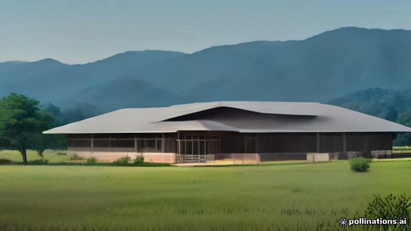

ইইউ পাঁচটি দেশ রুয়ান্ডায় শরণার্থী প্রত্যাবর্তন কেন্দ্র স্থাপন ঘোষণা
Al Jazeera English, France 24 · 2026-11-17
AI-generated illustrationজার্মানি, অস্ট্রিয়া, নেদারল্যান্ডস, ডেনমার্ক ও গ্রীস রুয়ান্ডাকে শরণার্থী ফেরত কেন্দ্র হিসেবে ব্যবহার করবে।
Al Jazeera English অনুযায়ী, জার্মানি, অস্ট্রিয়া, নেদারল্যান্ডস, ডেনমার্ক ও গ্রীস রুয়ান্ডাকে শরণার্থী ডিপোর্টেশন কেন্দ্র হিসেবে ব্যবহার করার ঘোষণা দিয়েছে। পাঁচটি দেশ বলেছে যে এই সুবিধা ইউরোপীয় ইউনিয়নের বাইরে একটি রিটার্ন হাব হিসেবে কাজ করবে, যা ব্লকের সীমার বাইরে প্রথম ধরনের কেন্দ্র।
France 24 জানিয়েছে যে, এই চুক্তি সোমবার উন্মোচিত হয়েছে, ইউরোপীয় ইউনিয়ন সম্প্রতি তার অভিবাসন নীতি কঠোর করার পর। এই দেশগুলো অধিকার সংস্থার উদ্বেগের পরেও একটি 'রিটার্ন-হাব' প্রতিষ্ঠার দিকে অগ্রসর হচ্ছে। ঘোষণাটি ইউরোইউর অনুমোদনের পরে এসেছে।
Written by AI from facts reported by the outlets named above. It may contain errors; check the original reporting.English version
EU Group of Five Announces Rwanda as Migrant Deportation Hub
According to Al Jazeera English, Germany, Austria, the Netherlands, Denmark and Greece have announced that Rwanda will be used as a deportation centre for migrants. The five countries said the facility will serve as a return hub outside the European Union, marking the first such centre beyond the bloc’s borders.
France 24 reported that the deal was unveiled on Monday after the European Union recently tightened its migration rules. The group of nations has been pursuing the establishment of a “return‑hub” despite concerns raised by rights organisations. The announcement follows the EU’s clearance for the plan.